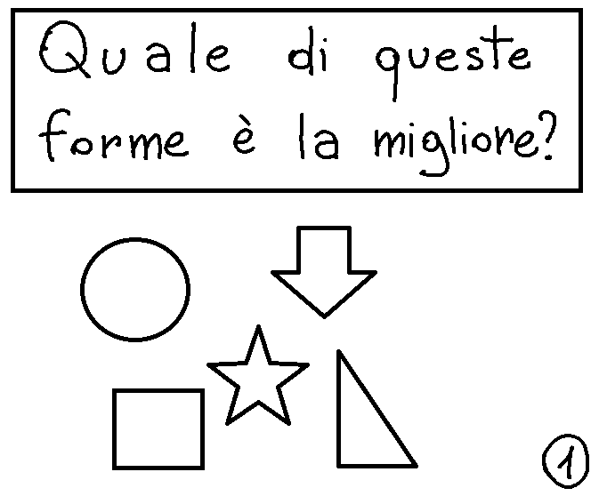
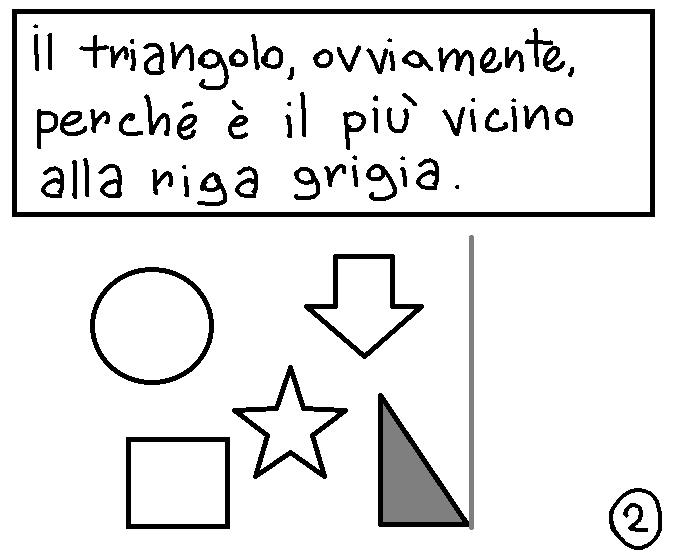
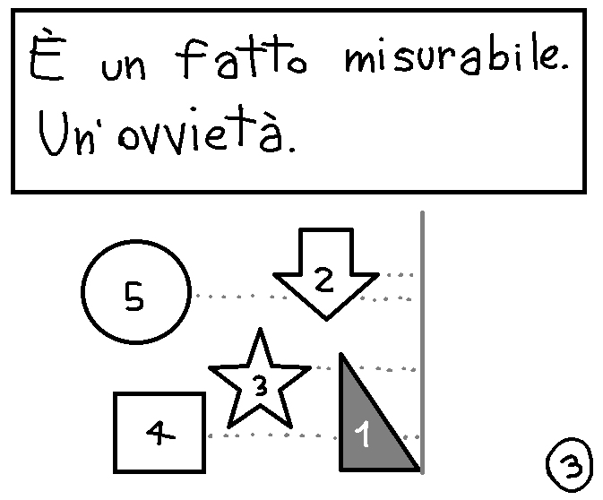
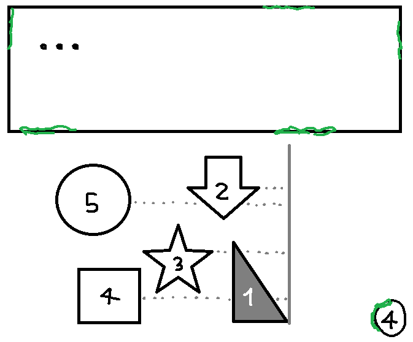
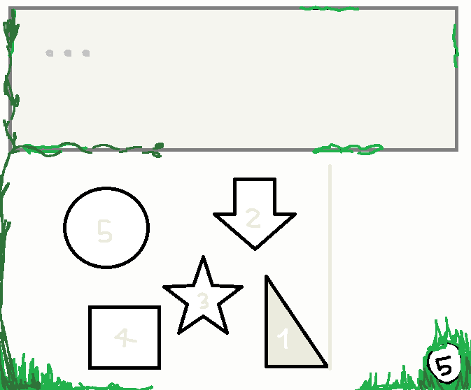
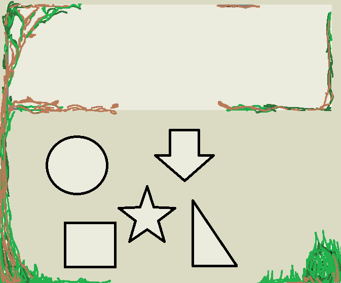
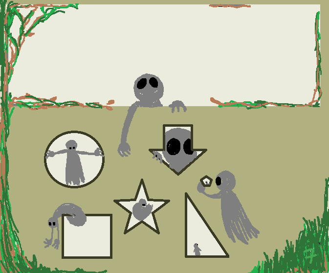

Una creatura grigia, con due tondi occhi neri e due braccia, si aggira per l'immagine come se ogni forma fosse il riquadro di un fumetto, a volte più piccola e a volte più grande.
Si sporge dalla finestra rettangolare che era occupata dal titolo, come se avesse finito di arrampicarsi.
Avvicina la testa per guardare attraverso il fumetto a forma di freccia, si arrotola in quello stellato, guarda giù tenendosi alle pareti del cerchio, si stiracchia appesa al lato superiore del rettangolo, si siede dentro al bordo del triangolo. Una creatura più grande tiene in mano una finestra pentagonale nuova, osservando la piccola creatura visibile all'interno.
Il numero di pagina, 7, è una chiazza d'erba più chiara.